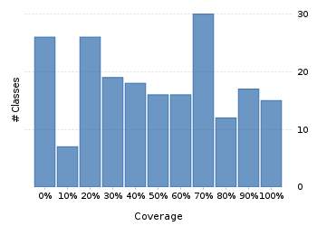
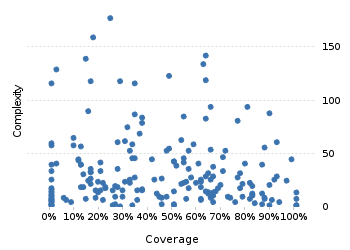

Project overview
Code coverage 228 classes, 9,405 / 21,538 elements
0.4366700643.7%
Test results 127 / 156 tests 1.36 secs
0.814102681.4%
Code metrics
4,882
12,842
3,814
228
157
7
68,718
27,801
6,977
0.54
3.37
16.73
32.57
1.83
Class Coverage Distribution

Class Complexity

Coverage tree map
Generating Coverage Tree Map. Please wait...

Top 20 project risks
BasicGJChronology
DateTimeZoneBuilder
DateTimeFormatterBuilder.MatchingParser
DateTimeZoneBuilder.OfYear
ZoneInfoCompiler
DateTimeZoneBuilder.PrecalculatedZone
DateTimeZoneBuilder.RuleSet
PeriodFormatterBuilder.Separator
DateTimeFormatterBuilder.NumberFormatter
PeriodType
ZoneInfoCompiler.Rule
ZoneInfoCompiler.DateTimeOfYear
PeriodFormatterBuilder.Composite
ZoneInfoCompiler.Zone
PeriodFormatterBuilder.SimpleAffix
PeriodFormatterBuilder.FieldFormatter
DateTimeZoneBuilder.DSTZone
DateTimeParserBucket.SavedState
DurationFieldType.StandardDurationFieldType
ImpreciseDateTimeField
Most complex packages
| 1. | 0.2972591229.7% |
org.joda.time 2458 |
| 2. | 0.4490183644.9% |
org.joda.time.format 1496 |
| 3. | 0.553694655.4% |
org.joda.time.chrono 1239 |
| 4. | 0.429451342.9% |
org.joda.time.field 667 |
| 5. | 0.8022483680.2% |
org.joda.time.tz 535 |
Most complex classes
| 1. | 0.2495201525% |
LocalDateTime 179 |
| 2. | 0.1704312117% |
LocalDate 161 |
| 3. | 0.633587863.4% |
DateTimeZone 144 |
| 4. | 0.1402116414% |
DateTime 141 |
| 5. | 0.626728162.7% |
PeriodFormatterBuilder.FieldFormatter 136 |